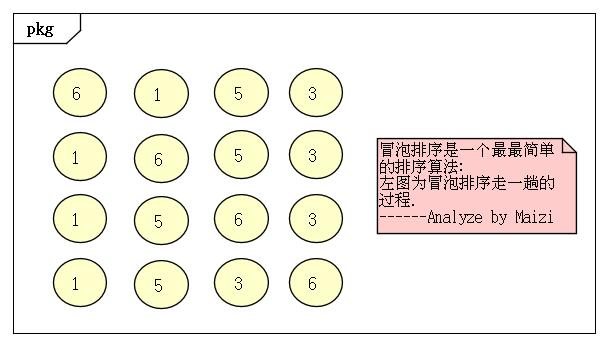
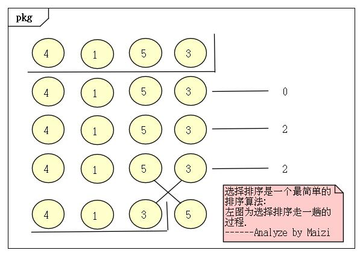
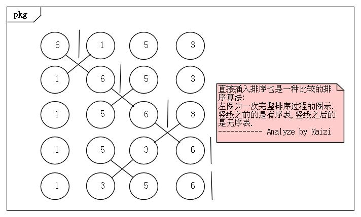

排序算法合集之起泡
起泡排序算法描述:
算法分析:
假若排成升序,用顺序表的数据结构来解决这些问题
①第一趟结尾位置为数组的最后一个元素,从数组的第一个元素开始依次和其后面的元素比较,若后面的元素较小则交换这两个元素.这样第一趟跑完数组中最大的元素肯定在当前的结尾位置上,后面的每趟都依次将结尾位置向前移动一个位置
②重复 ① 中的过程直至该趟的结尾位置和起始位置重合则说明排完了

起泡排序算法优劣:
优势 : 算法简单易懂,空间复杂度较小
劣势 : 算法中有过多的元素位置交换,可以通过优化减少交换次数(如选择排序)
贴上代码:
1 2 3 4 5 6 7 8 9 10 11 12 13 14 15 16 17 18 19 20 21 22 23 24 25 26 27 28 29 30 31 32 33 34 35 36 37 38
| #include <stdio.h> * 起泡排序 * @param arr 数组的指针 * @param len 数组的长度 */ void bubble_sort(int *const arr, size_t const len) { int i, j; for (i = len; i > 1; --i) { for (j = 0; j < i - 1; ++j) { if (*(arr + j) > *(arr + j + 1)) { *(arr + j) += *(arr + j + 1); *(arr + j + 1) = *(arr + j) - *(arr + j + 1); *(arr + j) = *(arr + j) - *(arr + j + 1); } } } } * 打印数组 * @param arr 数组的指针 * @param len 数组的长度 */ void print(int *const arr, size_t const len) { int i; printf("the sequence of arr which have been sorted:\n"); for (i = 0; i < len; ++i) printf("%d ", *(arr + i)); } int main(void) { int arr[] = {8, 4, 12, 2, 6, 10, 14, 1, 3, 5, 7, 9, 11, 13, 15}; size_t len = sizeof(arr) / sizeof(int); bubble_sort(arr, len); print(arr, len); return 0; }
|
附上测试结果:
1 2
| the sequence of arr which have been sorted: 1 2 3 4 5 6 7 8 9 10 11 12 13 14 15
|
排序算法合集之选择
选择排序算法描述:
算法分析:
假若排成升序,用顺序表的数据结构来解决这些问题
①第一趟结尾位置为数组的最后一个元素,启用一个标记记录当前最大值的角标,且每趟开始前都将标记初始化为0,即假定数组第0个位置元素是最大的.从数组的第二个元素开始依次将其和当前标记位置元素比较,若当前元素较大就将其角标位置记录未当前最大值位置.这样第一趟跑完数组中最大的元素就找到了,然后比较该位置是不是当前的结尾位置,若不时则将结尾位置的元素与标记位置的元素进行交换,后面的每趟都依次将结尾位置向前移动一个位置
②重复 ① 中的过程直至该趟的结尾位置和起始位置重合则说明排完了

选择排序算法优劣:
优势 : 算法简单易懂,空间复杂度较小
劣势 : 算法中有过多的元素位置交换,可以通过优化减少交换次数(如选择排序)
贴上代码:
1 2 3 4 5 6 7 8 9 10 11 12 13 14 15 16 17 18 19 20 21 22 23 24 25 26 27 28 29 30 31 32 33 34 35 36 37 38 39 40 41
| #include <stdio.h> * 选择排序 * @param arr 数组的指针 * @param len 数组的长度 */ void choosing_sort(int *const arr, size_t const len) { int i, j, max_index; for (i = len; i > 1; --i) { max_index = 0; for (j = 0; j < i; ++j) if (*(arr + j) > *(arr + max_index)) max_index = j; if (max_index < i - 1) { *(arr + i - 1) += *(arr + max_index); *(arr + max_index) = *(arr + i - 1) - *(arr + max_index); *(arr + i - 1) = *(arr + i - 1) - *(arr + max_index); } } } * 打印数组 * @param arr 数组的指针 * @param len 数组的长度 */ void print(int *const arr, size_t const len) { int i; printf("the sequence of arr which have been sorted:\n"); for (i = 0; i < len; ++i) printf("%d ", *(arr + i)); } int main(void) { int arr[] = {8, 4, 12, 2, 6, 10, 14, 1, 3, 5, 7, 9, 11, 13, 15}; size_t len = sizeof(arr) / sizeof(int); choosing_sort(arr, len); print(arr, len); return 0; }
|
附上测试结果:
1 2
| the sequence of arr which have been sorted: 1 2 3 4 5 6 7 8 9 10 11 12 13 14 15
|
排序算法合集之直接插入
直接插入排序算法描述:
算法分析:
假若排成升序,用顺序表的数据结构来解决这些问题
①将一个数组中元素看成一个有序表和一个无序表.开始时有序表中只包含一个元素(假定有序表一直都在该数组最前面),无序表中包含n-1个元素,排序过程中每次从无序表中取出第一个元素，通过二分搜索法定位从无序表中取出的元素在有序表中的插入点的位置,然后从无序表中取出元素至插入点的位置，依次向前两两交换.
②重复 ① 中的过程直至有序表元素个数等于数组长度则说明排完了

直接插入排序算法优劣:
优势 : 算法简单易懂.在搜索新元素插入位置时由于有序表中元素是有序的,可以用二分搜索来定位,相比选择排序有效减少了元素比较的次数
劣势 : 算法中仍有过多的元素位置交换操作,可以通过优化减少元素位置交换操作的次数(如希尔排序)
贴上代码:
1 2 3 4 5 6 7 8 9 10 11 12 13 14 15 16 17 18 19 20 21 22 23 24 25 26 27 28 29 30 31 32 33 34 35 36 37 38 39 40 41 42 43 44 45 46 47 48
| #include <stdio.h> * 直接插入排序 * @param arr 数组的指针 * @param len 数组的长度 */ void inserting_sort(int *const arr, size_t const len) { int i, j; for (i = 1; i < len; ++i) { int low = 0, high = i - 1; while (low < high) { int pivot = (low + high) >> 1; if (*(arr + pivot) > *(arr + i)) high = pivot - 1; else low = pivot + 1; } if (low == high) if (*(arr + low) < *(arr + i)) low++; for (j = i; j > low; --j) { *(arr + j) += *(arr + j - 1); *(arr + j - 1) = *(arr + j) - *(arr + j - 1); *(arr + j) = *(arr + j) - *(arr + j - 1); } } } * 打印数组 * @param arr 数组的指针 * @param len 数组的长度 */ void print(int *const arr, size_t const len) { int i; printf("the sequence of arr which have been sorted:\n"); for (i = 0; i < len; ++i) printf("%d ", *(arr + i)); } int main(void) { int arr[] = {8, 4, 12, 2, 6, 10, 14, 1, 3, 5, 7, 9, 11, 13, 15}; size_t len = sizeof(arr) / sizeof(int); inserting_sort(arr, len); print(arr, len); return 0; }
|
附上测试结果:
1 2
| the sequence of arr which have been sorted: 1 2 3 4 5 6 7 8 9 10 11 12 13 14 15
|
2016-09-15
— Maizi